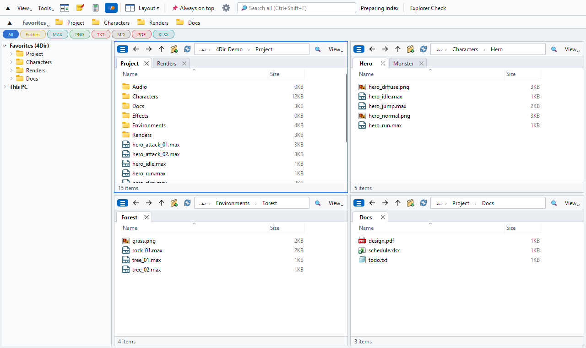
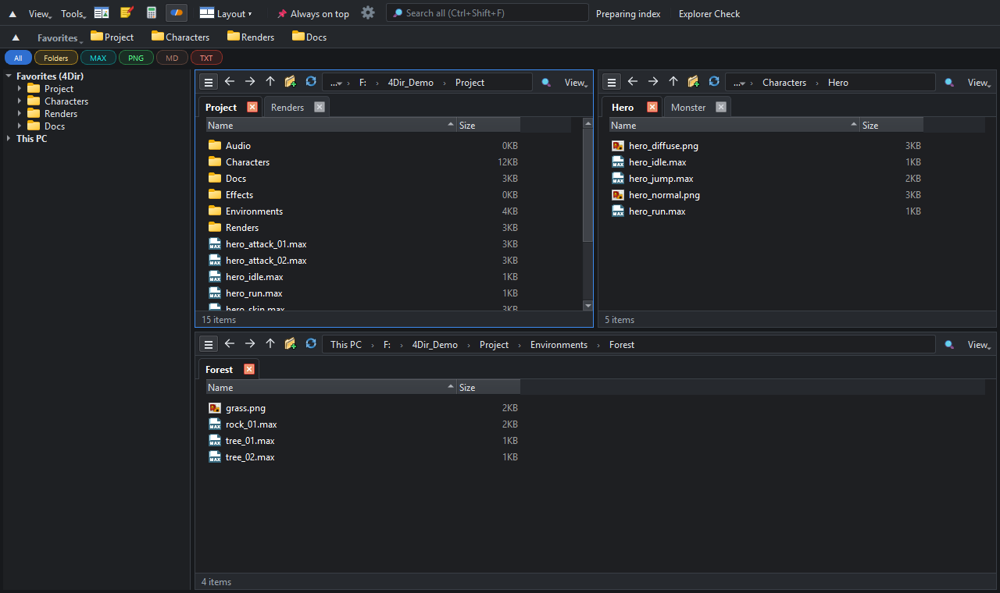

A multi-pane file manager faster than Windows File Explorer!!
A free, portable file manager for Windows 10/11. No installation — unzip and run.
Windows 10/11 64-bit · 47 MB · 2026-11-06 · free
Support 4Dir
4Dir is free and has no ads. If it saves you time, a small donation keeps updates coming.
What's new in v0.9.108
- Video preview: videos play in the preview window and step frame by frame like GIFs (|◀ ▶|, ← →, Space to play/pause), with a frame bar and frame strip, current / total time and fps, sound (with a mute button) and an autoplay switch. Phones (Galaxy, iPhone, cameras) show up in This PC — browse them and copy, drag, paste, rename or delete files. A button in the top bar shows or hides the type buttons in every pane.
- Archives as folders: double-click a ZIP, 7Z, RAR or TAR file to browse it inside 4Dir (read-only); open, copy, drag or F6 to take files out. Copy queue: copies and moves run one at a time — the ⏳ button lists waiting jobs to cancel or pause. Flat view: all files under a folder in one list (right-click empty space or Tools). Find duplicate files: same content, any name — keep one per group and send the rest to the Recycle Bin. Space opens and closes the preview window.
- Preview window: the preview now opens in its own window like the memo window, so the panes keep their size; it remembers its place and size and can stay on top (right-click). GIF frames: |◀ previous, ▶ play / ⏸ pause, ■ stop, ▶| next, and drag the frame strip to slide it. Type buttons above the list are smaller and colored by type, and never cut off — the ones that don't fit go under +N ▾. Memo pictures keep the size you set: click a picture and drag its corner handle.
- Memo window: the 📝 button (or Alt+M, or Tools ▸ Memo window) opens sticky memos in their own window, so the panes keep their size; it shows on the taskbar and can stay on top. Colored memos with checklists (type '[] ' at line start), bullets ('- '), bold, italic, underline, strikethrough, text color and size, and a 3/5 progress count. Drag a memo's header to reorder, double-click it to collapse, pin memos to the top, filter by text or color. Ctrl+click opens web addresses and folder/file paths; drag files or folders in to make links; paste images. Attach a memo to a folder and it pops up when you open that folder; set a reminder and the memo window comes up at that time. Deleted memos go to a trash you can restore from. All windows share the memos and they are saved automatically. Tables, numbered lists ('1. '), alignment, letter spacing, fonts, a − size + box and an insert-picture button; links are shown in blue.
- Pictures & types: a row of type buttons above the list ([All] [Folders] [JPG] [PSD]…) shows only that type (Ctrl+click for several). Group by type (folders · JPG · PNG…) in Details view. In icon views, picture thumbnails get a type badge (PSD · PNG · GIF…) and folders show the first picture inside as a cover. The preview pane gets GIF frame controls — previous/next frame, a frame slider and strip, frame number and delay, save the current frame as PNG — and shows the Windows preview of documents and videos when Windows provides one.
- Tooltips everywhere: every button and menu shows a short explanation when you hover over it. Turn them off in Settings ▸ General.

Features
Up to 20 panes
1, 2, 3, 4 or 6 pane layouts with one click, or any grid up to 5 × 4. Every pane has its own tabs.
Stays out of the way
Folders are read directly, without the heavy Windows shell view. No timers or polling when idle — safe to keep open next to 3ds Max, games or other heavy apps.
Instant search
Type to search every file name on your drives. Its own index updates in real time — no admin rights needed.
SVN status at a glance
Modified / added / conflict badges read straight from .svn — folders turn red when something inside changed. Git and Perforce through Windows overlays.
Feels like Explorer
Same keyboard shortcuts, the full Windows right-click menu, drag & drop to and from Explorer and other apps. Right-click a .webp image to save it as PNG or JPG.
Portable and private
Settings stay in the 4Dir folder. Light/dark theme, 10 languages, batch rename, session restore and an Explorer health check built in.

How to install
- Download the zip with the button above (or from GitHub Releases). The green “Code → Download ZIP” on GitHub is source code only and won't run.
- Right-click the zip → Properties → check Unblock → OK. (Otherwise Windows shows a security warning every time.)
- Extract it anywhere and double-click 4Dir.exe. (or 4Dir.vbs if 4Dir.exe is blocked)
If Windows SmartScreen appears: click More info → Run anyway.
Verify the download (optional)
In Command Prompt run certutil -hashfile 4Dir_v0.9.108.zip SHA256 — the result must match:
e5fe1394569211793f93f935860c93bbd52ddf631d4b168d8fb48f3439c0c8eb
FAQ
Is it really free?
Yes. 4Dir is free and open source (GPL-3.0). No ads, no account, no trial.
Can I use it at work?
Yes. 4Dir is GPL-3.0 free software, so companies can use it for free too, with no license fee or registration. Since it runs without installing, just check that your company allows portable apps.
Is it really faster than File Explorer?
Opening a folder with 1,000 files in a new window took 0.4 s in 4Dir and about 2 s in File Explorer. Opening one more window added about 10 MB of memory in 4Dir and about 130 MB in File Explorer. Measured 5 times each on the same PC (Windows 11, SSD). With tens of thousands of files in one folder the gap gets smaller.
Does it send any data?
No personal data. It only checks once a day whether a new version exists (you can turn this off in Tools).
Something went wrong?
Tools → Save log for problem report, then press “Send by email” (or email the zip to support@4dir.net). GitHub users can also open an issue.